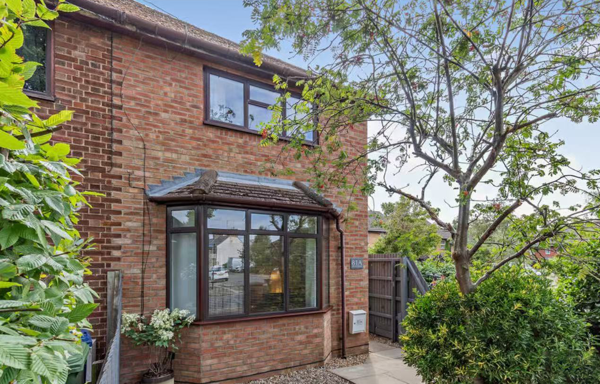

XUQI Associates
Providing structural engineering solutions for homes, businesses, and public projects · Based in Cambridge

Providing structural engineering solutions for homes, businesses, and public projects · Based in Cambridge
Based in Cambridge, XUQI Associates delivers smart, reliable structural engineering solutions for homes, businesses, and public projects. We combine technical expertise with practical insight to make sure every project is safe, efficient, and built to last.
From surveys and assessments to design and planning support, we guide our clients through every step with professionalism and care. At XUQI Associates, quality and safety come first—helping Cambridge and the surrounding areas build with confidence.